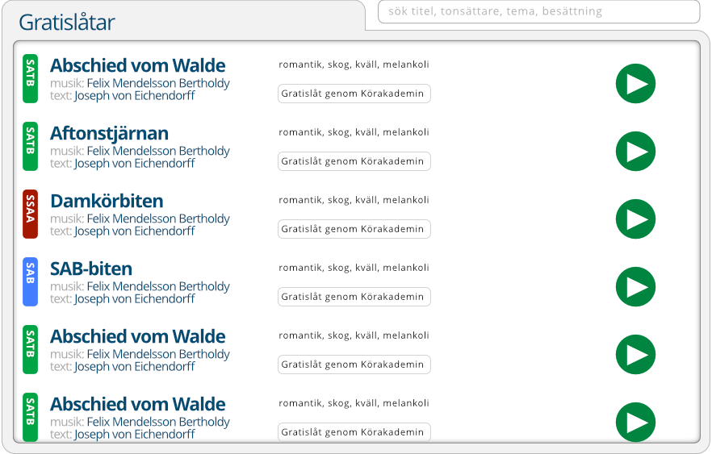

Enklare att spela, hitta och lära sig körmusik med nya Scorx. Nu fler än 1000 låtar i Körakademins ständigt växande bibliotek!
Du som leder en Sensus-kör kan nu dela aktuell repertoar med dina körsångare - de får sina noter utan att behöva leta fram titlarna på egen hand.
Om du sjunger i en Sensus-kör så kan din körledare dela aktuell repertoar med dej. Dessutom kan du som tidigare välja ett antal titlar på egen hand.
Som Sensus-sångare så kan du få tillgång till Körakademins hela låtbibliotek. Och dessutom notläsningsträning, röstutveckling och mycket annat.
Lyssna till din egen stämma - eller valfri kombination av stämmor - och sjung med. Pekare i notbilden gör det lätt att hänga med.
Klicka på titlarna nedan för att pröva Scorx.
